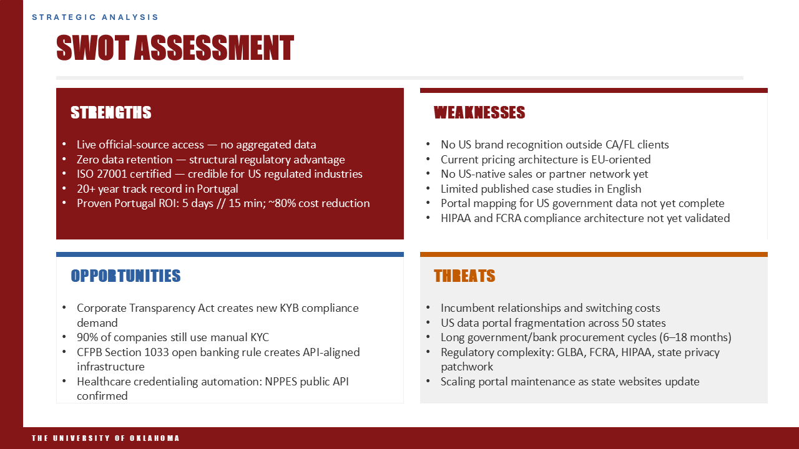
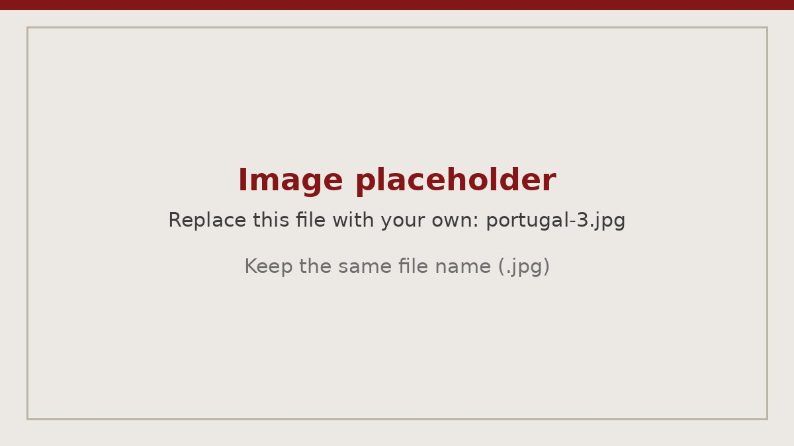
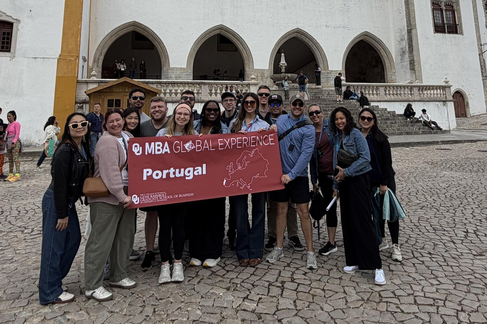
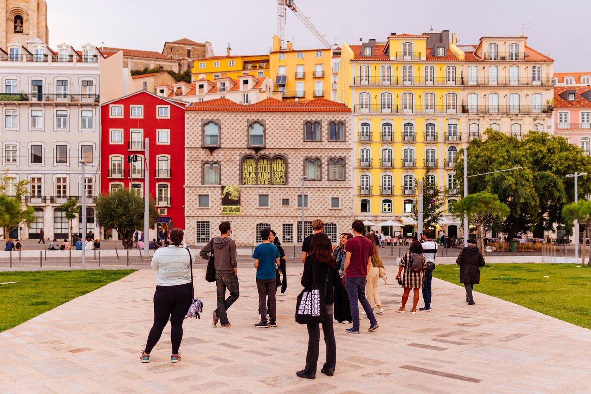
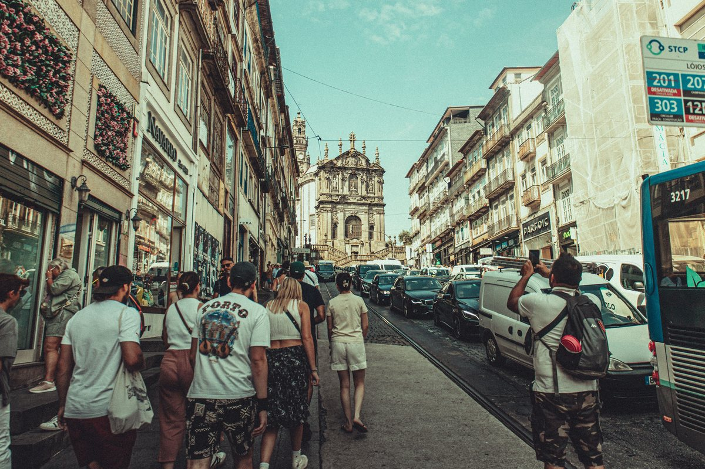

Study abroad · Consulting · May 2026
Global Business Experience: Portugal
A week in Lisbon and Porto that combined company visits across Portugal’s innovation economy, cultural immersion, and a live U.S. market-entry engagement for a Portugal-based technology company.
- Program
- Global Business Experience, OU MBA
- Setting
- Lisbon, Sintra, Nazaré and Porto, Portugal
- Timeline
- Consulting work January–May 2026; travel in May 2026
- Client
- A Portugal-based technology company
- Team
- Ten MBA students, two faculty members
- Deliverables
- Market analysis report and 12-slide deck

The program
The Global Business Experience is a course built around a real client abroad. The consulting work happens during the spring semester. In the first week of summer, the class travels to the destination country to present to the client in person and to learn the country’s business landscape and culture firsthand. This year’s destination was Portugal. Business is international and so are the people in it, which is why the OU MBA treats international experience as part of the curriculum rather than an extra.
Our consulting team was ten MBA students working alongside two faculty members. We began work with the client in January and finished when we presented to its leadership in May, so the week in Portugal was the culmination of a semester of work, not the start of it.
Preparing for the trip
Preparation had four parts: assigned readings, individual country research, regular meetings with the client, and working sessions with the other students and faculty. For the country research, I studied Portugal through a business lens, looking at its economy, its industries, and how companies there operate. I condensed that into a one-page formal paper and presented my position, so the whole group had a common starting point for the conversations we would have on the ground.
A week of company visits
Across the week we met organizations in artificial intelligence, drone and defense technology, industrial paper manufacturing, logistics, and startup incubation. Portugal’s private sector is moving faster than most people outside it realize.
One day showed me what the program was designed to do. In the morning we visited a technology and innovation organization for a substantive discussion of its work. Lunch turned into a surprise when we cooked at the table ourselves, which nobody had warned us about. In the afternoon we visited a national logistics industry association, which operated in a different gear entirely. In the evening we went back to business and ran through our client deck with a real deliverable twelve hours away. Those were three completely different modes in one day, and none of them was wasted.
The same week, a large paper manufacturer showed us what production looks like at industrial scale. In Porto, we visited a startup incubator campus that I thought was a genuine resource for promising early-stage companies.
The strongest lesson from these meetings was about how business is done. In every room, relationships came first. Nobody rewarded a fast pitch that pushed toward a close. Leading with curiosity and taking time to build trust was the strategy, and that is a useful discipline for anyone planning to enter a market from outside.
The consulting engagement
Our client was a Portugal-based technology company that wanted to enter the U.S. market. Its platform pulls business verification data live from official government and registry portals through a single API, without storing it. The practical question was how the platform should approach the U.S., and what a go-to-market plan would need to address.
The ten of us worked as a single team, divided into smaller groups that each owned a section of the final deliverable. Another student and I owned the market analysis. We drew on interviews with the client, secondary research, and the market-analysis method I was learning at the same time on my healthcare technology engagement. The hardest part was analyzing a new country and its norms and dynamics from the outside, which is a very different task from sizing a market I already understood.
Our analysis found three converging growth markets for the platform in the U.S. (process automation, business verification, and identity verification) and a clear difference from incumbents that rely on cached or aggregated data. A SWOT assessment organized the rest. The strengths were the platform’s privacy-first architecture and the efficiency gains the client had already shown in Portugal. The opportunities came from new regulation that was driving demand for business verification, the persistence of manual verification processes, and adjacent uses such as healthcare credentialing. The weaknesses were the gaps to close before launch: U.S. brand recognition, pricing built for Europe, a U.S. sales and partner network, English-language case studies, and a compliance architecture validated for U.S. regulated buyers.


The client presentation
Our final package was a full market analysis report, a 12-slide presentation, and speaker notes. We presented in person in Lisbon to the client’s CEO, its CFO, and several members of its technical staff, with the full student team and both instructors in the room. The client was so engaged that the discussion afterward ran longer than the presentation itself.
I opened the presentation and helped settle the team’s nerves. In the days before, I coached my teammates through several dry runs, with one rule: tell the story behind each slide instead of reading from notecards or from the screen. It made a visible difference to how the team delivered.
Beyond the work
The week also gave us plenty of Portugal itself. We took walking tours of Lisbon and Porto, toured palaces in the hills of Sintra, including the colorful Pena Palace, and stopped at the beach and lighthouse in the surf town of Nazaré on the bus ride north. It was not wave season, but the setting was memorable. We shared a sunset cruise and dinner on the Tagus River, and the evening ended with karaoke as a team. In Porto we visited the historic train station, toured a port wine cellar, and had dinner overlooking the river, and we climbed a lot of hills along the way.
Portugal was also more American than I expected. Unlike much of Mediterranean Europe, it is a car-centric country. Between the cities, the food, and the people, I came away with a very different picture than the one I had from research alone.



What I took away
Working with a company in its own country sharpened how I think about market entry. The questions a company has to answer about customers, positioning, and channels look different once you have sat across the table from the people trying to answer them. The trip also reminded me how much of consulting depends on listening well before recommending anything.
I also learned something about my own role on a team. My section was delivered well, and I am a naturally strong presenter who could help the group present. But when another group was working through a harder section, I stayed in my lane instead of stepping in. Strong individual work is a floor, not a ceiling, and next time I would offer help sooner.
I wrote about the trip on LinkedIn soon after returning home. You can read my post about the week. If you would like to hear more about the trip or the engagement, I am glad to talk about either.